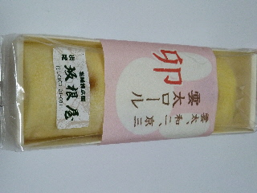
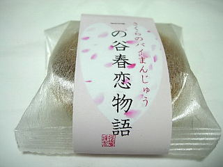
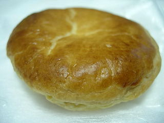
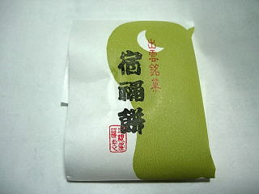
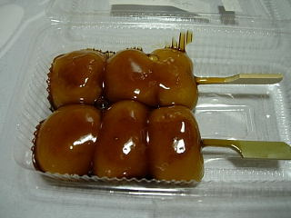

坂根屋のロールケーキ
2011/01/23
和菓子屋さんのロールケーキです。
名前も「雲太ロール」で和菓子っぽいです。

和菓子風に何か凝った商品かな？と思ったんですが、普通にロールケーキでした。
スポンジ多目で、軽い感じの商品ですね。これだったら、あんまり好き嫌いがなさそうなので、お土産にいいかなと思いました。
島根県出雲市今市町890
2011/01/23
和菓子屋さんのロールケーキです。
名前も「雲太ロール」で和菓子っぽいです。

和菓子風に何か凝った商品かな？と思ったんですが、普通にロールケーキでした。
スポンジ多目で、軽い感じの商品ですね。これだったら、あんまり好き嫌いがなさそうなので、お土産にいいかなと思いました。
2010/4/6
春らしいお饅頭ですね。でも名前がちょっと言い難いです。

パイまんの中が桜餡になっています。
味は想像通りだと思います。

私はパイのお饅頭が好きなので、わりと好きな感じのお菓子でした。
2010/03/22
ゆめタウン出雲でお茶とお菓子をいただきました。
坂根屋さんで買い物したら、お茶とお菓子を頂きました。

たまにお店の前でお茶を出されていだんですが、入り口近くで落ちつかないし、セルフなのでちょっと近寄りにくかったんですが、今日は店員さんが「どうぞ」ってお茶を入れてくださったので、頂き易かったです。
2008/6/15
ラピタにあった坂根屋さんが閉店したって聞きました。
食品レジのすぐ先にあって、商品が見やすくて買い物しやすかったんですけど、無くなって残念です。
他の店舗へはなかなか行く事がないので、ガッカリです。
2008/2/23
タレが沢山かかったみたらし団子です。

だんごが横に広がってますね。それが売りの団子みたいです。
ちょっとトロ～ンとしているんですけど、もちもちとしていて、普通の団子より歯ごたえが強かったです。
甘めのタレに、団子自体もちょっと甘かったんですが、食べごたえのあるタイプの団子にはいいかなって思いました。
2007/05/31
生クリーム入りや、フルーツとかジャムが入った「どらやき」は目に付きやすいので食べることがあったんでんですが、普通の「どらやき」は久々に食べた気がします。
普通に無難においしいですね。変わった商品のどら焼きのイメージが強くなってきていたので「そうそう、どらやきってこうゆう味だったよね」って感心しながら食べました。
変わったものを食べるのもいいですけど、普通の商品もそれはそれで美味しいですね。
「普通が意外と一番美味しいかも？」って思いました。
2007/01/26
生どらの黒糖バージョンです。
どらやきの側のケーキ部分に黒糖が入っているので、見た目がちょっと黒いです。
黒糖のケーキとアンの組み合わせなので、黒糖饅頭に似た感じですね。
生どらって生クリームが入ってマイルドな味のどらやきってイメージがありますが、これは黒糖味がしっかりあるので、普通のタイプよりも濃い味になってました。
ちょっと変わった感じの商品で面白いです。
2006/08/26
コーヒーゼリー生どらを食べたいって思ってお店に行ったんですが、新商品の桃の生ドラが売ってたので、こっちでもいいかって思い買って帰りました。
普通に売ってる生ドラに、桃を小さくカットしたものが入ってました。こんな感じの商品がこれからぞくぞく出て来たら面白いですね。坂根屋さんはベースの生どらがマイルドな味なので、色んな味が加わってもそこそこまとまりがいい気がします。
桃ですが、値段の関係のせいかもしれませんが入ってる量はそんなに多くないです。
食べてて桃に当たると、甘い桃味がしました。
沢山桃が入ってると、きっと水っぽくなってべっとりしちゃうんでしょうね。それに、他の味が強くなりすぎたらもうそれは「どら焼き」じゃなくなっちゃいますよね。これはこれできっといいんでしょう。
2006/3/11
坂根屋さんでは、今年は戌年なので、11（わんわん）日には110円でお菓子を販売しているそうで、今日は生どらが110円で販売してました。（普段は150円です。）
なので、今日は「生どら」と、「桜生どら」（こっちは安売りじゃなくて150円）を買って食べました。
坂根屋さんの生どらは、生地がとってもふんわりしててマイルドな食感でした。中の餡もわりとあっさり味でマイルドで食べ易かったです。
桜生どらは、生どらに桜の葉が入っただけなんですけど、ふんわり桜餅風味がして、いまの時期は季節感があっていいなって思いました。
2006/03/01
濃厚練乳餡バージョンのいちご大福を食べました。
普通のいちご大福は、黒餡の味がしっかりしてて、苺との食べ合わせが美味しいって思うんですけど、これは白餡なので餡の味はちょっとマイルドな感じで、普通のとは違った味わいでした。
餡に練乳が入ってるので、苺との相性がとっても良く、食べてて違和感はなかったです。
餡がマイルドなぶん、苺のみずみずしさがとってもよく味わえました。練乳の甘さも加わってイチゴの味がひきたって美味しかったです。